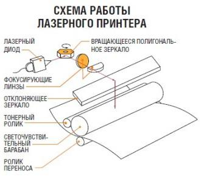

Лазерный принтер — один из видов принтеров, позволяющий быстро изготавливать высококачественные отпечатки текста и графики на обычной (офисной) бумаге. Подобно фотокопировальным аппаратам лазерные принтеры используют в работе процесс ксерографической печати, однако отличие состоит в том, что формирование изображения происходит путём непосредственной экспозиции (освещения) лазерным лучом фоточувствительных элементов принтера.
Отпечатки, сделанные таким способом, не боятся влаги, устойчивы к истиранию и выцветанию. Качество такого изображения наиболее высокое.
